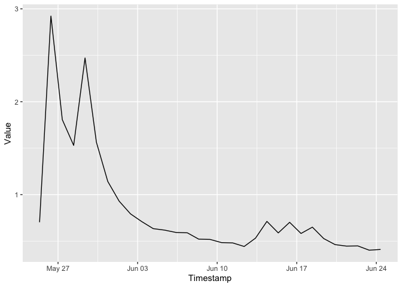

The sepa package provides access to environmental data collected by the Scottish Environment Protection Agency (SEPA).
Installation
You can install the development version of sepa from GitHub with:
devtools::install_github("simonmoulds/sepa")
#> Skipping install of 'sepa' from a github remote, the SHA1 (2ef40daf) has not changed since last install.
#> Use `force = TRUE` to force installationExample
This is a basic example which shows you how to solve a common problem:
library(dplyr)
#>
#> Attaching package: 'dplyr'
#> The following objects are masked from 'package:stats':
#>
#> filter, lag
#> The following objects are masked from 'package:base':
#>
#> intersect, setdiff, setequal, union
library(lubridate)
#>
#> Attaching package: 'lubridate'
#> The following objects are masked from 'package:base':
#>
#> date, intersect, setdiff, unionThe steps required to download historical streamflow data are outlined below:
grps <- sepa_group_list()
q_grp <- grps |> filter(group_name %in% "StationsWithFlow") |> pull(group_id)
# List stations that measure flow
stns <- sepa_station_list(group_id = q_grp)
# Choose arbitrary station
stn_id <- stns$station_id[1]
available_ts <- sepa_timeseries_list(stn_id)
# Get the timeseries ID for daily mean flow
ts_id <- available_ts |>
filter(stationparameter_name == "Flow" & ts_name == "Day.Mean") |>
pull(ts_id)
# Retrieve data
ts <- sepa_timeseries_values(ts_id, start_date = Sys.Date() %m-% months(1), end_date = Sys.Date())
head(ts)
#> # A tibble: 6 × 8
#> Timestamp Value ts_name ts_id Units stationparameter_name
#> <dttm> <dbl> <chr> <chr> <chr> <chr>
#> 1 2024-05-25 09:00:00 0.703 Day.Mean 62065010 m³/s Flow
#> 2 2024-05-26 09:00:00 2.92 Day.Mean 62065010 m³/s Flow
#> 3 2024-05-27 09:00:00 1.81 Day.Mean 62065010 m³/s Flow
#> 4 2024-05-28 09:00:00 1.53 Day.Mean 62065010 m³/s Flow
#> 5 2024-05-29 09:00:00 2.47 Day.Mean 62065010 m³/s Flow
#> 6 2024-05-30 09:00:00 1.56 Day.Mean 62065010 m³/s Flow
#> # ℹ 2 more variables: station_name <chr>, station_id <chr>Once we have obtained the data we can plot the timeseries:
